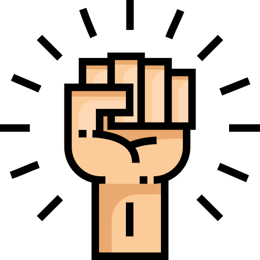

Nasz zespół
Paweł Kalicki
Jeśli ktoś potrzebuje pomocy z problemami nierozwiązywalnymi albo nie potrafi czegoś zrozumieć, to to jest właściwy człowiek na właściwym miejscu. Wytłumaczy wszystko w najdziwniejszy, najprostszy i oryginalny sposób. Nie zostawia pytań bez odpowiedzi. Człowiek pozytywnie zakręcony. Podejmuje się projektów, których nikt by się nie podjął. Na codzień pracuje nad grafiką 3D. Pasjonuje go druk 3D oraz matematyka. Marzy o stworzeniu czegoś ogromnego przez co zostanie zapamiętany.

Robert Piątek
Jeśli kogoś w grupie można nazwać geekiem to właśnie jego. Zawsze chętny do rozmów na tematy gier, filmów, książek, komiksów i całej reszty związanej z popkulturą. Rok temu nie umiał nawet napisać "Hello World!", dziś prowadzi zajęcia dla innych studentów, cierpliwy i pełen pasji. Skupia się na webdesignie, C++ oraz C#, ale jest otwarty również na inne technologie, szczególnie te najnowsze. Kiedyś chce zostać fullstackiem i twórcą gier. Do każdego ciężkiego zadania podchodzi z myślą "To nie tak że tego nie umiem, ja po prostu jeszcze tego nie umiem."
Daria Bednarz
Kobieta udowadniająca że w informatyce jest miejsce nie tylko dla facetów. Jej świat to przestrzeń wirtualna. Motywuje i pociesza. Według niej szklanka zawsze jest do połowy pełna. Pała optymizmem, zarażając nim wszystkich wokół. Uważa, że w życiu najważniejszy jest sen. Od dziecka uwielbia filmy animowane. Dociekliwie szuka odpowiedzi jak są one tworzone. Starannie studiuje te techniki aby w przyszłości zostać grafikiem filmowym.
Jakub Piskorowski
Dla znajomych “Jacob”. Urodzony pesymista. Patrzy realnie na otaczający go świat. Miłośnik ciemnej, świeżo palonej, ziarnistej kawy. Językiem C# włada bieglej niż językiem ojczystym. Choć mały wzrostem to wielki duchem. Zawsze wspiera i jest skory do pomocy.
Bartosz Rosiak
Z chęcią się uczy i poznaje nowe technologie, lecz nie ogranicza się tylko do nich. Programować zaczął półtora roku temu i idzie mu to coraz lepiej, aktualnie szlifuje język Java. Lubi pracować w grupie, wymieniając się wiedzą. Oprócz tego jest zawsze uśmiechnięty i z poczuciem humoru, w jego towarzystwie nigdy nie jest nudno.